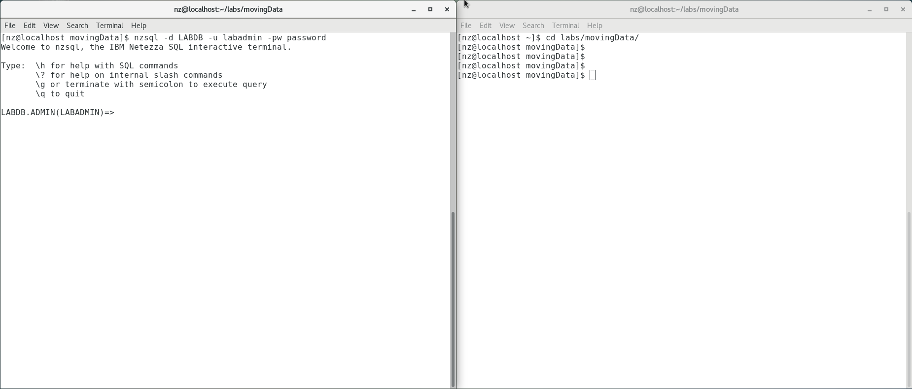

Load and Unloading Data
In every data warehouse environment, there is a need to load new data into the database. The task to load data into the database is not just a one-time operation but rather a continuous operation that can occur hourly, daily, weekly, or even monthly. Loading data into the database is a vital operation that needs to be supported by the data warehouse system. Netezza Performance Server (NPS) provides a framework to support not only the loading of data into the Netezza Performance Server database environment, but also the unloading of data from the database environment. This framework contains more than one component, some of these components are:
External Tables - These are tables stored as flat files on the host or client systems and registered like tables in the Netezza Performance Server catalog. They can be used to load data into the Netezza Performance Server or unload data to the file system.
nzload - This is a wrapper command line tool around external tables
that provides an easy method loading data into the Netezza Performance
Server.
Format Options - These are options for formatting the data load to and from external tables.
1 Objectives
This lab will help you explore the Netezza Performance Server framework
components for loading data into the database and unloading data from
the database. You will use the various commands to create external
tables to unload and load data. You will also get a basic understanding
of the nzload utility. In this lab the REGION and NATION tables in the
LABDB database are used to illustrate the use of external tables and the
nzload utility. After this lab you will have a good understanding on how
to load and unload data from a Netezza Performance Server database
environment
The first part of this lab will explore using External Tables to unload and load data.
The second part of this lab will discuss using the nzload utility to load records into tables.
2 Lab Environment
The lab system will be a virtual machine running on Virtual Box. Please see the document on how to install the NPS Virtual Machine for your workstation (Windows or Mac OS).
3 Connect to the Netezza Performance Server
Use the following information to connect to the virtual NPS system. There are two options to access the command line:
-
Login to the VM directly and use the terminal application available inside the VM.
-
Use the local terminal application on your workstation.
The lab will use the command line as the nz user.
4 Lab Setup
This lab uses an initial setup script to make sure the correct user and database exist for the remainder of the lab. Follow the instructions below to run the setup script.
-
Login to NPS Command Line using one of these two methods.
a. Login to the VM directly and use the terminal application available inside the VM.
b. Connect to your Netezza Performance Server image using a terminal application (Windows PowerShell, PuTTY, Mac OSX Terminal)
-
If you are continuing from the previous lab and are already connected to
nzsqlquit thenzsqlconsole with the\qcommand. -
Prepare for this lab by running the setup script. To do this use the following two commands:
cd ~/labs/movingData/setupLab ./setupLab.shDROP DATABASE CREATE DATABASE ERROR: CREATE USER: object LABADMIN already exists as a USER. ALTER USER ALTER DATABASE CREATE TABLE CREATE TABLE CREATE TABLE CREATE TABLE CREATE TABLE CREATE TABLE CREATE TABLE CREATE TABLE Load session of table 'NATION' completed successfully Load session of table 'REGION' completed successfully Load session of table 'CUSTOMER' completed successfully Load session of table 'SUPPLIER' completed successfully Load session of table 'PART' completed successfullyThe error message at the beginning is expected since the script tries to clean up existing
LINEITEMtables.
5 External Tables
An external table allows Netezza Performance Server to treat an external
file as a database table. An external table has a definition, a table
schema, in the Netezza Performance Server system catalog, but the actual
data exists outside of the Netezza Performance Server database. This is
referred to as a data source file. External tables can be used to access
files which are stored on a file system. After you have created the
external table definition, you can use INSERT INTO statements to load
data from the external file into a database table or SELECT FROM
statements to query the external table. Different methods are described
to create and use external tables using the nzsql interface. The
external data source files for the external tables will also be
examined, so a second session will be used to view these files.
Connect to your Netezza Performance Server image using a Terminal
application to ssh into <your-nps-vm-ip-address> (as user nz with
password nz). Alternatively, you can use a terminal application on the
virtual machine desktop.
<your-nps-vm-ip-address> is the default IP address for a local VM, the
IP may be different for your session.
Change to the lab working directory /home/nz/labs/movingData using the
following command:
cd /home/nz/labs/movingData
Connect to the LABDB database as the database owner, LABADMIN, using the
nzsql interface:
nzsql -d LABDB -u labadmin -pw password
Welcome to nzsql, the IBM Netezza SQL interactive terminal.
Type: \h for help with SQL commands
\? for help on internal slash commands
\g or terminate with semicolon to execute query
\q to quit
In this lab we will need to alternatively execute SQL commands and operating system commands. To make this task easier for you, we will open a second Terminal session for executing operating system commands like nzload, view generated external files etc. It will be referred to as session 2 throughout the lab.

The picture above shows the two Terminal windows that you will need. Terminal 1, on the left, will be used for SQL commands and Terminal 2, on the right, will be used for operating system prompt commands.
Open another session [Terminal 2] using PuTTY or a Terminal
Application.
Login to <your-nps-vm-ip-address> as user nz with password nz.
Change to the /home/nz/labs/movingData directory:
cd /home/nz/labs/movingData
5.1 Unloading Data using External Tables
External tables will be used to unload rows from the LABDB database as
records into an external datasource file. Various methods to create and
use external tables will be explored unloading rows from either REGION
or NATION tables. Five different basic use cases are presented for you
to follow so you can gain a better understanding of how to use external
tables to unload data from a database.
5.1.1 Unloading data with an External Table created with the SAMEAS clause
The first external table will be used to unload data from the REGION
table into an ASCII delimited text file. This external table will be
named ET1_REGION using the same column definition as the REGION table.
After the ET1_REGION external table is created you will then use it to
unload all the rows from the REGION table. The records for the
ET1_REGION external table will be in the external datasource file,
et1_region_flat_file. The basic syntax to create this type of external
table is:
CREATE EXTERNAL TABLE table_name
SAMEAS table_name
USING external_table_options
The SAMEAS clause allows the external table to be created with the same
column definition of the referenced table. This is referred to as
implicit schema definition.
As the LABDB database owner, LABADMIN, you will create the first basic
external table using the same column definitions as the REGION table:
create external table et1_region sameas region using
(dataobject ('/home/nz/labs/movingData/et1_region_flat_file'));
CREATE EXTERNAL TABLE
Use the internal slash option \dx to list the external tables in the
LABDB database.
\dx
List of relations
Schema | Name | Type | Owner
--------+------------+----------------+----------
ADMIN | ET1_REGION | EXTERNAL TABLE | LABADMIN
(1 row)
List the properties of the external table et1_region using the following
internal slash option to describe the table, \d <external table
name>.
\d et1_region
External Table "ET1_REGION"
Attribute | Type | Modifier
-------------+------------------------+----------
R_REGIONKEY | INTEGER | NOT NULL
R_NAME | CHARACTER(25) | NOT NULL
R_COMMENT | CHARACTER VARYING(152) |
DataObject - '/home/nz/labs/movingData/et1_region_flat_file'
adjustdistzeroint -
bool style - 1_0
code set -
compress - FALSE
cr in string -
ctrl chars -
date delim - -
date style - YMD
delim - |
encoding - INTERNAL
escape -
fill record -
format - TEXT
ignore zero -
log dir - /tmp
max errors - 1
max rows -
null value - NULL
quoted value - NO
remote source -
require quotes -
skip rows -
socket buf size - 8388608
timedelim - :
time round nanos -
time style - 24HOUR
trunc string -
y2base -
includezeroseconds -
record length -
record delimiter -
nullindicator bytes -
layout -
decimaldelim -
disablenfc -
includeheader -
datetime delim -
meridian delim -
lfinstring -
This output includes the columns and associated data types in the
external table. Notice that this is similar to the REGION table since
the external table was created using the SAMEAS clause in the CREATE
EXTERNAL TABLE command. The output also includes the properties of the
external table. The most notable property is the DataObject property
that shows the location and the name of the external datasource file
used for the external table. We will examine some of the others.
Now that the external table is created, use it to unload data from the
REGION table using an INSERT statement.
insert into et1_region select * from region;
INSERT 0 4
Use the external table like a regular table by issuing SQL statements.
Try issuing a simple SELECT FROM statement to return all rows in
external table ET1_REGION :
select * from et1_region order by 1;
R_REGIONKEY | R_NAME | R_COMMENT
-------------+---------------------------+-----------------------------
1 | na | north america
2 | sa | south america
3 | emea | europe, middle east, africa
4 | ap | asia pacific
(4 rows)
You will notice that this is the same data that is in the REGION table.
But the data retrieved for this SELECT statement was from the datasource
of this external table and not from the data within the database.
The main reason for creating an external table is to unload data from a
table to a file. Using the second Putty (or Terminal) session, review
the file et1_region_flat_file. This is the file that was created in the
/home/nz/labs/movingData directory.
more et1_region_flat_file
3|emea|europe, middle east, africa
1|na|north america
2|sa|south america
4|ap|asia pacific
This is an ASCII delimited flat file containing the data from the REGION
table. The column delimiter used in this file was the default character
'|'.
5.1.2 Unloading data with an External Table using the AS SELECT clause
The second external table will be used to unload data from the REGION
table into an ASCII delimited text file using a different method. The
external table will be created and the data will be unloaded in the same
create statement. A separate step is not required to unload the data.
The external table will be named ET2_REGION and the external datasource
file will be named et2_region_flat_file. The basic syntax to create this
type of external table is:
CREATE EXTERNAL TABLE table_name 'filename' AS select_statement;
The AS clause allows the external table to be created with the same
columns returned in the SELECT FROM statement, which is referred to as
implicit table schema definition. This also unloads the rows at the same
time the external table is created.
The first method used to create an external table required the data to
be unloaded in a second step using an INSERT statement. Using the first
Putty (or Terminal) session, create an external table and unload the
data in a single step.
create external table et2_region
'/home/nz/labs/movingData/et2_region_flat_file' as select * from region;
INSERT 0 4
This command created the external table ET2_REGION using the same
definition as the REGION table and also unloaded the data to the
et2_region_flat_file.
Again, use \dx to list the external tables in the LABDB database.
\dx
List of relations
Schema | Name | Type | Owner
--------+------------+----------------+----------
ADMIN | ET1_REGION | EXTERNAL TABLE | LABADMIN
ADMIN | ET2_REGION | EXTERNAL TABLE | LABADMIN
(2 rows)
You will notice that there are now two external tables. You can also list the properties of the external table. The output will be similar to the output in the last section, except for the filename.
Using the second session, review the file that was created,
et2_region_flat_file, in the /home/nz/labs/movingData directory.
more et2_region_flat_file
3|emea|europe, middle east, africa
1|na|north america
2|sa|south america
4|ap|asia pacific
This file is exactly the same as the file you reviewed in the last chapter. The only difference in this example is we didn't need to unload it explicitly.
5.1.3 Unloading data with an external table using defined columns
The first two external tables that you created used the exact same
columns from the REGION table using an implicit table schema. You can
also create an external table by explicitly specifying the columns. This
is referred to as an explicit table schema. The third external table
that you create will still be used to unload data from the REGION table
but only from the R_NAME and R_COMMENT columns. The ET3_REGION external
table will be created in one step and then the data will be unloaded
into the et3_region_flat_file ASCII delimited text file using a
different delimiter string. The basic syntax to create this type of
external table is:
CREATE EXTERNAL TABLE table_name ({column_name type} [, ... ])
[USING external_table_options}]
-
Create a new external table to only include the
R_NAMEandR_COMMENTcolumns and exclude theR_REGIONKEYcolumn from theREGIONtable. Also change the delimiter string from the default '|' to '=':create external table et3_region (r_name char(25), r_comment varchar(152)) USING (dataobject ('/home/nz/labs/movingData/et3_region_flat_file') DELIMITER '=');CREATE EXTERNAL TABLE -
List the properties of the
ET3_REGIONexternal table:\d et3_regionExternal Table "ET3_REGION" Attribute | Type | Modifier -----------+------------------------+---------- R_NAME | CHARACTER(25) | R_COMMENT | CHARACTER VARYING(152) | DataObject - '/home/nz/labs/movingData/et3_region_flat_file' adjustdistzeroint - bool style - 1_0 code set - compress - FALSE cr in string - ctrl chars - date delim - - date style - YMD delim - = encoding - INTERNAL escape - fill record - format - TEXT ignore zero - log dir - /tmp max errors - 1 max rows - null value - NULL quoted value - NO remote source - require quotes - skip rows - socket buf size - 8388608 timedelim - : time round nanos - time style - 24HOUR trunc string - y2base - includezeroseconds - record length - record delimiter - nullindicator bytes - layout - decimaldelim - disablenfc - includeheader - datetime delim - meridian delim - lfinstring -Notice that there are only two columns for this external table since only two columns were specified when creating the external table. The rest of the output is very similar to the properties of the other two external tables that were created, with two main exceptions. The first difference is the Dataobjects field, since the filename is different. The other difference is the string used for the delimiter, since it is now '=' instead of the default, '|'.
-
Unload the data from the
REGIONtable but only the data from columnsR_NAMEandR_COMMENT.insert into et3_region select r_name, r_comment from region;INSERT 0 4Alternatively, you could have created the external table and unloaded the data in one step using the following command:
create external table et4_test '/home/nz/labs/movingData/et4_region_flat_file' using (delimiter '=') as select r_name, r_comment from region; -
Using the second session review the file that was created,
et3_region_flat_file, in the/home/nz/labs/movingDatadirectory.more et3_region_flat_fileemea=europe, middle east, africa na=north america sa=south america ap=asia pacificNotice that only two columns are present in the flat file using the '=' string as a delimiter.
5.1.4 (Optional) Unloading data with an External Table from two tables
The first three external table exercises unloaded data from one table.
In this exercise, the external table will be created based on a table
join between the REGION and NATION tables. The two tables will be joined
on the REGIONKEY and only the N_NAME and R_NAME columns will be defined
for the external table. This exercise will illustrate how data can be
unloaded using SQL statements other than a simple SELECT FROM statement.
The external table will be named ET_NATION_REGION using another ASCII
delimited text file named et_nation_file_flat_file.
-
Unload data from both the
REGIONandNATIONtables joined on theREGIONKEYcolumn to list all of the countries and their associated regions. Instead of specifying the columns in the create external table statement you will use theAS SELECToption:create external table et_nation_region '/home/nz/labs/movingData/et_nation_region_flat_file' as select n_name, r_name from nation, region where n_regionkey=r_regionkey;INSERT 0 14 -
List the properties of the ET_NATION_REGION external table.
\d et_nation_regionExternal Table "ET_NATION_REGION" Attribute | Type | Modifier -----------+---------------+---------- N_NAME | CHARACTER(25) | NOT NULL R_NAME | CHARACTER(25) | NOT NULL DataObject - '/home/nz/labs/movingData/et_nation_region_flat_file' adjustdistzeroint - bool style - 1_0 code set - compress - FALSE cr in string - ctrl chars - date delim - - date style - YMD delim - | encoding - INTERNAL escape - fill record - format - TEXT ignore zero - log dir - /tmp max errors - 1 max rows - null value - NULL quoted value - NO remote source - require quotes - skip rows - socket buf size - 8388608 timedelim - : time round nanos - time style - 24HOUR trunc string - y2base - includezeroseconds - record length - record delimiter - nullindicator bytes - layout - decimaldelim - disablenfc - includeheader - datetime delim - meridian delim - lfinstring -You will notice that the external table was created using the two columns specified in the
SELECTclause:N_NAMEandR_NAME. -
View the data of the
ET_NATION_REGIONexternal table.select * from et_nation_region;N_NAME | R_NAME ---------------------------+--------------------------- canada | na united states | na brazil | sa guyana | sa venezuela | sa united kingdom | emea portugal | emea united arab emirates | emea south africa | emea australia | ap japan | ap macau | ap hong kong | ap new zealand | ap (14 rows)This is the result of the joining the
NATIONandREGIONtable on theREGIONKEYcolumn to return just theN_NAMEandR_NAMEcolumns. -
Using the second session, review the file that was created,
et_nation_region_flat_file, in the/home/nz/labs/movingDatadirectory:more et_nation_region_flat_filecanada|na united states|na brazil|sa guyana|sa venezuela|sa united kingdom|emea portugal|emea united arab emirates|emea south africa|emea australia|ap japan|ap macau|ap hong kong|ap new zealand|apWe created a flat delimited flat file from a complex SQL statement. External tables are a very flexible and powerful way to load, unload and transfer data.
5.1.5 (Optional) Unloading data with an External Table using the compress format
In the previous exercises, the external tables were created used the
default ASCII delimited text format. In this exercise, the external
table will be similar to the second external table that was created, but
instead of the using an ASCII delimited text format we will use the
compressed binary format. The name of the external table will be
ET4_REGION and the datasource file name will be et4_region_compress.
CREATE EXTERNAL TABLE table_name 'filename' USING (COMPRESS true
FORMAT 'internal') AS select_statement;
-
Create an external table using a similar method that you used to create the second external table, in section 2.1.2. But instead of using an ASCII delimited-text format, the datasource will use the compressed binary format. This is achieved by using the
COMPRESSandFORMATexternal table options:create external table et4_region '/home/nz/labs/movingData/et4_region_compress' using (compress true format 'internal') as select * from region;INSERT 0 4As a reminder, the external table is created, and the data is unloaded in the same operation using the
AS SELECTclause. -
List the properties of the
ET4_REGIONexternal table\d et4_regionExternal Table "ET4_REGION" Attribute | Type | Modifier -------------+------------------------+---------- R_REGIONKEY | INTEGER | NOT NULL R_NAME | CHARACTER(25) | NOT NULL R_COMMENT | CHARACTER VARYING(152) | DataObject - '/home/nz/labs/movingData/et4_region_compress' adjustdistzeroint - bool style - code set - compress - TRUE cr in string - ctrl chars - date delim - date style - delim - encoding - escape - fill record - format - INTERNAL ignore zero - log dir - max errors - 1 max rows - null value - quoted value - remote source - require quotes - skip rows - socket buf size - 8388608 timedelim - time round nanos - time style - trunc string - y2base - includezeroseconds - record length - record delimiter - nullindicator bytes - layout - decimaldelim - disablenfc - includeheader - datetime delim - meridian delim - lfinstring -Notice that the option for
COMPRESShas changed fromFALSEtoTRUEindicating that the datasource file is compressed, and theFORMAThas changed fromTEXTtoINTERNALwhich is required for compressed files.
5.2 Dropping External Tables
Dropping external tables is similar to dropping a regular Netezza
Performance Server table. The column definition for the external table
is removed from the Netezza Performance Server catalog. Keep in mind
that dropping the table doesn't delete the external datasource file so
they also have to be maintained, but the external datasource file can
still be used for loading data into a different table. In this exercise
you will drop the ET1_REGION table, but you will not delete the
associated external datasource file, et1_region_flat_file. This
datasource file will be used later in this lab to load data into the
REGION table.
-
Drop the first external table that you created,
ET1_REGION, using theDROP TABLEcommand:drop table et1_region;DROP TABLEThe same drop command for tables is used for external tables. There is not a separate
DROP EXTERNAL TABLEcommand. -
Verify the external table has been dropped using the internal slash option,
\dx, to list all of the external tables.\dxList of relations Schema | Name | Type | Owner --------+------------------+----------------+---------- ADMIN | ET2_REGION | EXTERNAL TABLE | LABADMIN ADMIN | ET3_REGION | EXTERNAL TABLE | LABADMIN ADMIN | ET4_REGION | EXTERNAL TABLE | LABADMIN ADMIN | ET4_TEST | EXTERNAL TABLE | LABADMIN ADMIN | ET_NATION_REGION | EXTERNAL TABLE | LABADMIN (5 rows)Notice the remaining external tables that you created still exist.
-
Even though the external table definition no longer exists within the
LABDBdatabase, the flat file namedet1_region_flat_filestill exists in the/home/nz/labs/movingDatadirectory. Verify this by using the second putty session:lset1_region_flat_file et3_region_flat_file et4_region_flat_file et2_region_flat_file et4_region_compress et_nation_region_flat_fileNotice that the file
et1_REGION_flat_filestill exists. This file can still be used to load data into another similar table.
5.3 Loading Data using External Tables
External tables can also be used to load data into tables in the
database. In this exercise, data will be loaded into the REGION table,
after first removing the existing rows. The method to load data from
external tables into a table is similar to using the DML INSERT INTO and
SELECT FROM statements. We will use two different methods to load data
into the REGION table, one using an external table and the other using
the external datasource file. Loading data into a table from any
external table will generate an associated log file with a default name
of <table_name>.<database_name>.log
-
Before loading the data into the
REGIONtable, delete the rows from the data using the TRUNCATE TABLE command:truncate table region;TRUNCATE TABLE -
Verify the table is empty with the
SELECT *command:select * from region;R_REGIONKEY | R_NAME | R_COMMENT -------------+--------+----------- (0 rows) -
Load data into the
REGIONtable from theET2_REGIONexternal table using anINSERTstatement:insert into region select * from et2_region;INSERT 0 4 -
Check to ensure that the table contains the four rows using the
SELECT *statement.select * from region;R_REGIONKEY | R_NAME | R_COMMENT -------------+---------------------------+----------------------------- 3 | emea | europe, middle east, africa 1 | na | north america 2 | sa | south america 4 | ap | asia pacific (4 rows) -
Again, delete the rows in the
REGIONtable:truncate table region;TRUNCATE TABLE -
Check to ensure that the table is empty using the
SELECT *statement.select * from region;R_REGIONKEY | R_NAME | R_COMMENT -------------+--------+----------- (0 rows) -
Load data into the
REGIONtable using the ASCII delimited file that was created for external tableET1_REGION. Recall that the definition of the external table was removed from that database, but the external data source file,et1_region_flat_file, still exists:insert into region select * from external '/labs/movingData/et1_region_flat_file';INSERT 0 4 -
Verify the table contains the four rows using the
SELECT *statement.select * from region;R_REGIONKEY | R_NAME | R_COMMENT -------------+---------------------------+----------------------------- 3 | emea | europe, middle east, africa 1 | na | north america 2 | sa | south america 4 | ap | asia pacific (4 rows)Since this is a load operation, there is always an associated log file
<table>.<database>.nzlogcreated for each load performed. By default this log file is created in the/tmpdirectory.In the second Putty session review this file:
more /tmp/REGION.ADMIN.LABDB.nzlogLoad started at:08-May-13 07:10:13 EDT Database: LABDB Tablename: REGION Datafile: /labs/movingData/etl_region_flat_file ... Load Options Field delimiter: '|' NULL value: NULL File Buffer Size (MB): 8 Load Replay Region (MB): 0 Encoding: INTERNAL Max errors: 1 Skip records: 0 Max rows: 0 FillRecord: No Truncate String: No Escape Char: None Accept Control Chars: No Allow CR in string: No Ignore Zero: No Quoted data: NO Require Quotes: No BoolStyle: 1_0 Decimal Delimiter: '.' Disable NFC: No Date Style: YMD Date Delim: '-' Time Style: 24HOUR Time Delim: ':' Time extra zeros: No Statistics number of records read: 4 number of bad records: 0 number of records loaded: 4 Elapsed Time (sec): 0.0 Load completed at: 08-May-13 07:10:13 EDTNotice that the log file contains the load options and statistics of the load, along with environment information to identify the table.
6 Loading Data using the nzload Utility
The nzload command is a SQL CLI client application that allows you to
load data from the local host or a remote client, on all the supported
client platforms. The nzload command processes command-line load options
to send queries to the host to create an external table definition, runs
the insert/select query to load data, and when the load completes, drops
the external table. The nzload command is a command-line program that
accepts options from multiple sources, where some of the sources can be
from:
-
Command line
-
Control file
-
NZ Environment Variables
Without a control file, you can only do one load at a time. Using a
control file allows multiple loads. The nzload command connects to a
database with a username and password, just like any other Netezza
Performance Server client application. The username specifies an account
with a particular set of privileges, and the system uses this account to
verify access.
For this section of the lab you will continue to use the LABADMIN user
to load data into the LABDB database. The nzload utility will be used to
load records from an external datasource file into the REGION table. The
nzload log files will be reviewed to examine the nzload options. Since
you will be loading data into a populated REGION table, you will use the
TRUNCATE TABLE command to remove the rows from the table.
We will continue to use the two putty sessions from the external table lab.
Session One, which is connected to the NZSQL console to execute SQL commands, for example to review tables after load operations
Session Two, which will be used for operating system commands such as execute nzload.
6.1 Using the nzload Utility with Command Line Options
The first method for using the nzload utility to load data in the REGION
table will specify options at the command line. We will only need to
specify the datasource file and we will use default options for the
rest. The datasource file will be the et1_region_flat_file that you
created in the External Tables section.
nzload -db <database> -u <username> -pw <password> -df <datasource filename>
-
As the
LABDBdatabase owner,LABADMINfirst remove the rows in theREGIONtable:truncate table region;TRUNCATE TABLE -
Verify the rows have been removed from the table using the
SELECT *statement:select * from region;R_REGIONKEY | R_NAME | R_COMMENT -------------+--------+----------- (0 rows) -
Using the second session at the OS command line, use the nzload utility to load data.
-db <database name>, -u <user>, -pw <password>, -t <table name>, -df <data file>, and -delimiter <string>:The following command will load data from the
et1_region_flat_fileinto theREGIONtable using the following command line options:nzload -db labdb -u labadmin -pw password -t region -df et1_region_flat_file -delimiter '|'Load session of table 'REGION' completed successfully -
Verify the rows have been load into the table by using the
SELECT *statement:select * from region;R_REGIONKEY | R_NAME | R_COMMENT -------------+---------------------------+----------------------------- 3 | emea | europe, middle east, africa 1 | na | north america 2 | sa | south america 4 | ap | asia pacific (4 rows)These rows were loaded into the
REGIONtable from the records in theet1_region_flat_filefile. -
For every load task performed there is always an associated log file created with the format
<table>.<db>.nzlog. By default, this log file is created in the current working directory, which is the/home/nz/labs/movingDatadirectory. In the second session review this file:more REGION.ADMIN.LABDB.nzlogLoad started at:03-Apr-20 03:05:12 PDT Database: LABDB Schema: ADMIN Tablename: REGION Datafile: /home/nz/labs/movingData/et1_region_flat_file Host: localhost.localdomain Load Options Field delimiter: '|' NULL value: NULL File Buffer Size (MB): 8 Load Replay Region (MB): 0 Encoding: INTERNAL Max errors: 1 Skip records: 0 Max rows: 0 FillRecord: No Truncate String: No Escape Char: None Accept Control Chars: No Allow CR in string: No Ignore Zero: No Quoted data: NO Require Quotes: No BoolStyle: 1_0 Decimal Delimiter: '.' Disable NFC: No Date Style: YMD Date Delim: '-' DateTime Delim: ' ' Time Style: 24HOUR Time Delim: ':' Record Delim: '\n' Meridian Delim: ' ' Time extra zeros: No LfInString: False Statistics number of records read: 4 number of bytes read: 91 number of bad records: 0 ------------------------------------------------- number of records loaded: 4 Elapsed Time (sec): 0.0 ----------------------------------------------------------------------------- Load completed at: 03-Apr-20 03:05:12 PDT =============================================================================Notice the log file contains the load options and statistics of the load, along with environment information to identify the database and table.
The
-db,-u, and-pwoptions specify the database name, the user, and the password respectively. Alternatively, you could omit these options if the NZ environment variables are set to the appropriate database, username and password values. Since the NZ environment variables,NZ_DATABASE,NZ_USER, andNZ_PASSWORDare set to system, admin, and password, we will need to use these options so the load will use theLABDBdatabase and theLABADMINuser.There are other options that you can use with the nzload utility. These options were not specified here since the default values were sufficient for this load task.
-
-tspecifies the target table name in the database -
-dfspecifies the datasource file to be loaded -
-delimiterspecifies the string to use as the delimiter in an ASCII delimited text file.
The following
nzloadcommand syntax is equivalent to thenzloadcommand we used above. It is intended to demonstrate some of the options that can be used with thenzloadcommand, or can be omitted when default values are acceptable.nzload -db labdb -u labadmin -pw password -t region -df et1_region_flat_file -delimiter '|' -outputDir '<current directory>' -lf <table>.<database>.nzlog -bf<table>.<database>.nzlog -compress false -format text -maxErrors 1The
-lf,-bf, and-maxErrorsoptions are explained in the next exercise. The-compressand-formatoptions indicate that the datasource file is an ASCII delimited text file. For a compressed binary datasource file the following options would be used:-compress true -format internal. -
6.2 Using the nzload Utility with a Control File.
As demonstrated in section 3.1 you can run the nzload command by specifying the command line options or you can use another method by specifying the options in a file, referred to as a control file. This is useful because the file can be modified over time, since loading data into a database for a data warehouse environment is a continuous operation. A nzload control file has the following basic structure:
DATAFILE <filename>
{
[<option name> <option value>]
}
The -cf option is used at the nzload command line to indicate the use
of a control file:
nzload -u <username> -pw <password> -cf <control file>
The -u and -pw options are optional if the NZ_USER and NZ_PASSWORD
environment variables are set to the appropriate user and password.
Using the -u and -pw options overrides the values in the NZ
environment variables.
In this session you will load rows into an empty REGION table using the
nzload utility with a control file. The control file will set the
following options: delimiter, logDir, logFile, and badFile, along with
the database and table name. The datasource file to be used in this
session is the region.del file.
-
As the
LABDBdatabase owner,LABADMINfirst remove the rows in theREGIONtable:truncate table region;TRUNCATE TABLE -
Verify the rows have been removed from the table using the
SELECT *statement. The table should contain no rows.select * from region;R_REGIONKEY | R_NAME | R_COMMENT -------------+--------+----------- (0 rows)The control file will be used by the nzload utility to load data into the
REGIONtable using theregion.deldata file. The control file has already been created in the lab directory. A control file can include the following options:Parameter Value Database Database name Tablename Table name Delimiter Delimiter string LogDir Log directory LogFile Log file name BadFile Bad record log file name -
Review the control file in the second putty session with the following command:
more control_fileDATAFILE /home/nz/labs/movingData/region.del { Database labdb Tablename region Delimiter '|' LogDir '/home/nz/labs/movingData' LogFile region.log BadFile region.bad } -
Load the data using the nzload utility and the control file you just reviewed.
nzload -u labadmin -pw password -cf control_fileLoad session of table 'REGION' completed successfully -
The
nzloadlog file was renamed using the information in the control file. The log file name was changed from the default to region.log and the location was changed from the/tmpdirectory to/labs/. Check thenzloadlog.more region.logLoad started at:03-Apr-20 03:38:32 PDT Database: LABDB Schema: ADMIN Tablename: REGION Datafile: /home/nz/labs/movingData/region.del Host: localhost.localdomain Load Options Field delimiter: '|' NULL value: NULL File Buffer Size (MB): 8 Load Replay Region (MB): 0 Encoding: INTERNAL Max errors: 1 Skip records: 0 Max rows: 0 FillRecord: No Truncate String: No Escape Char: None Accept Control Chars: No Allow CR in string: No Ignore Zero: No Quoted data: NO Require Quotes: No BoolStyle: 1_0 Decimal Delimiter: '.' Disable NFC: No Date Style: YMD Date Delim: '-' DateTime Delim: ' ' Time Style: 24HOUR Time Delim: ':' Record Delim: '\n' Meridian Delim: ' ' Time extra zeros: No LfInString: False Statistics number of records read: 4 number of bytes read: 91 number of bad records: 0 ------------------------------------------------- number of records loaded: 4 Elapsed Time (sec): 0.0 ----------------------------------------------------------------------------- Load completed at: 03-Apr-20 03:38:32 PDT -
Verify the rows in the
REGIONtable in the first putty session with the nzsql console:select * from region;R_REGIONKEY | R_NAME | R_COMMENT -------------+---------------------------+----------------------------- 3 | emea | europe, middle east, africa 1 | na | north america 2 | sa | south america 4 | ap | asia pacific (4 rows)
6.3 (Optional) Using nzload with Bad Records
The first two load methods illustrated how to use the nzload utility to
load data into an empty table using command line options or a control
file. In a data warehousing environment, most of the time data is
incrementally added to a table already containing some rows.
There will be instances where records from a datasource might not match the datatypes in the table. When this occurs, the load will abort when the first bad record is encountered. This is the default behavior and is controlled by the maxErrors option, which is set to a default value of 1.
For this exercise we will add additional rows to the NATION table. Since
we will be adding rows to the NATION table, there will be no need to
truncate the table. The datasource file we will be using is the
nation.del file, which unfortunately has a bad record.
-
First check the
NATIONtable by listing all of the rows in the table using theSELECT *statement in the first putty session:select * from nation;N_NATIONKEY | N_NAME | N_REGIONKEY | N_COMMENT -------------+---------------------------+-------------+---------------------------------- 1 | canada | 1 | canada 2 | united states | 1 | united states of america 3 | brazil | 2 | brasil 4 | guyana | 2 | guyana 5 | venezuela | 2 | venezuela 6 | united kingdom | 3 | united kingdom 7 | portugal | 3 | portugal 8 | united arab emirates | 3 | al imarat al arabiyah multahidah 9 | south africa | 3 | south africa 10 | australia | 4 | australia 11 | japan | 4 | nippon 12 | macau | 4 | aomen 13 | hong kong | 4 | xianggang 14 | new zealand | 4 | new zealand (14 rows) -
Using the second session at the OS command line you will use the
nzloadutility to load data from the nation.del file into theNATION:nzload -db LABDB -u labadmin -pw password -t nation -df nation.del -delimiter '|'Error: Operation canceled Error: External Table : count of bad input rows reached maxerrors limit See /home/nz/labs/movingData/NATION.ADMIN.LABDB.nzlog file Error: Load Failed, records not inserted.This is an indication that the load has failed due to a bad record in the datasource file.
-
Since the load has failed no rows were loaded into the
NATIONtable, which you can confirm by using theSELECT *statement (in the first session):select * from nation;N_NATIONKEY | N_NAME | N_REGIONKEY | N_COMMENT -------------+---------------------------+-------------+---------------------------------- 1 | canada | 1 | canada 2 | united states | 1 | united states of america 3 | brazil | 2 | brasil 4 | guyana | 2 | guyana 5 | venezuela | 2 | venezuela 6 | united kingdom | 3 | united kingdom 7 | portugal | 3 | portugal 8 | united arab emirates | 3 | al imarat al arabiyah multahidah 9 | south africa | 3 | south africa 10 | australia | 4 | australia 11 | japan | 4 | nippon 12 | macau | 4 | aomen 13 | hong kong | 4 | xianggang 14 | new zealand | 4 | new zealand (14 rows) -
In the second session, check the log file to determine the problem:
more NATION.ADMIN.LABDB.nzlogLoad started at:03-Apr-20 04:31:19 PDT Database: LABDB Schema: ADMIN Tablename: NATION Datafile: <stdin> Host: localhost.localdomain Load Options Field delimiter: '\t' NULL value: NULL File Buffer Size (MB): 8 Load Replay Region (MB): 0 Encoding: INTERNAL Max errors: 1 Skip records: 0 Max rows: 0 FillRecord: No Truncate String: No Escape Char: None Accept Control Chars: No Allow CR in string: No Ignore Zero: No Quoted data: NO Require Quotes: No BoolStyle: 1_0 Decimal Delimiter: '.' Disable NFC: No Date Style: YMD Date Delim: '-' DateTime Delim: ' ' Time Style: 24HOUR Time Delim: ':' Record Delim: '\n' Meridian Delim: ' ' Time extra zeros: No LfInString: False Load started at:03-Apr-20 04:36:02 PDT Database: LABDB Schema: ADMIN Tablename: NATION Datafile: /home/nz/labs/movingData/nation.del Host: localhost.localdomain Load Options Field delimiter: '|' NULL value: NULL File Buffer Size (MB): 8 Load Replay Region (MB): 0 Encoding: INTERNAL Max errors: 1 Skip records: 0 Max rows: 0 FillRecord: No Truncate String: No Escape Char: None Accept Control Chars: No Allow CR in string: No Ignore Zero: No Quoted data: NO Require Quotes: No BoolStyle: 1_0 Decimal Delimiter: '.' Disable NFC: No Date Style: YMD Date Delim: '-' DateTime Delim: ' ' Time Style: 24HOUR Time Delim: ':' Record Delim: '\n' Meridian Delim: ' ' Time extra zeros: No LfInString: False Found bad records bad #: input row #(byte offset to last char examined) [field #, declaration] diagnostic, "text consumed"[last char examined] ---------------------------------------------------------------------------------------------------------------------------- 1: 10(1) [1, INT4] expected field delimiter or end of record, "2"[t] Statistics number of records read: 10 number of bytes read: 226 number of bad records: 1 ------------------------------------------------- number of records loaded: 0 Elapsed Time (sec): 0.0 ----------------------------------------------------------------------------- Load completed at: 03-Apr-20 04:36:02 PDT =============================================================================The Statistics section indicates that 10 records were read before the bad record was encountered during the load process. As expected, no rows were inserted into the table since the default is to abort the load when one bad record is encountered. The log file also provides information about the bad record:
Found bad records bad #: input row #(byte offset to last char examined) [field #, declaration] diagnostic, "text consumed"[last char examined] ---------------------------------------------------------------------------------------------------------------------------- 1: 10(1) [1, INT4] expected field delimiter or end of record, "2"[t]Using the log file, we are able to determine the problem is that the value '2t' is in a field for an
INT(4)column. Since '2t' is not a valid integer, the load marked this as a bad record10(1)indicates the input record number within the file and the offset within the row where a problem was encountered. For this example, the input record is10and offset is1.[1, INT(4)]indicates the column number within the row and the data for the column. For this example, the column number is 1 and the data type isINT(4)."2"[t]indicates the character that caused the problem. For this example, the character is2t. -
We can verify our problem determination for the load failure is correct by examining the
nation.deldatasource file that was used for the load. In the second session execute the following command:more nation.del15|andorra|2|andorra 16|ascension islan|3|ascension 17|austria|3|osterreich 18|bahamas|2|bahamas 19|barbados|2|barbados 20|belgium|3|belqique 21|chile|2|chile 22|cuba|2|cuba 23|cook islands|4|cook islands 2t|denmark|3|denmark 25|ecuador|2|ecuador 26|falkland islands|3|islas malinas 27|fiji|4|fiji 28|finland|3|suomen tasavalta 29|greenland|1|kalaallit nunaat 30|great britain|3|great britian 31|gibraltar|3|gibraltar 32|hungary|3|magyarorszag 33|iceland|3|lyoveldio island 34|ireland|3|eire 35|isle of man|3|isle of man 36|jamaica|2|jamaica 37|korea|4|han-guk 38|luxembourg|3|LuxembourgNotice on the 10th line the output. There is indeed an invalid
2tin the first column of the input file. Therefore, we made the correct assumption that the '2t' is causing the problem. From this list you can assume that the correct value should be24. -
Alternatively, we could have examined the nzload bad log file
NATION.LABDB.nzbad, which will contain all bad records that are encountered during a load. In the second session execute the following command:more NATION.ADMIN.LABDB.nzbad2t|denmark|3|DenmarkThis is the same data as identified in the
nation.delfile and using the log file information to locate the record. Since the default is to stop the load after the first bad record is processed there is only one row in the bad log file. If we were to change the default behavior to allow more bad records to be processed, this file could potentially contain more records. It provides a comfortable overview of all the records that created exceptions during load. -
We have the option of changing the
NATION.delfile to change '2t' to '24' and then rerun the samenzloadcommand as in step 7. Instead you will rerun a similar load but you will allow 10 bad records to be encountered during the load process. To change the default behavior, you need to use the command option-maxErrors. You will also change the name of the nzbad file using the-bfcommand option and the log filename using the-lfcommand option:nzload -db labdb -u labadmin -pw password -t nation -df nation.del -delimiter '|' -maxerrors 10 -bf nation.bad -lf nation.logLoad session of table 'NATION' completed successfullyNow the load is successful.
-
Verify the newly loaded rows are in the
NATIONusing theSELECT *command:select * from nation order by n_nationkey;N_NATIONKEY | N_NAME | N_REGIONKEY | N_COMMENT -------------+---------------------------+-------------+---------------------------------- 1 | canada | 1 | canada 2 | united states | 1 | united states of america 3 | brazil | 2 | brasil 4 | guyana | 2 | guyana 5 | venezuela | 2 | venezuela 6 | united kingdom | 3 | united kingdom 7 | portugal | 3 | portugal 8 | united arab emirates | 3 | al imarat al arabiyah multahidah 9 | south africa | 3 | south africa 10 | australia | 4 | australia 11 | japan | 4 | nippon 12 | macau | 4 | aomen 13 | hong kong | 4 | xianggang 14 | new zealand | 4 | new zealand 15 | andorra | 2 | andorra 16 | ascension islan | 3 | ascension 17 | austria | 3 | osterreich 18 | bahamas | 2 | bahamas 19 | barbados | 2 | barbados 20 | belgium | 3 | belqique 21 | chile | 2 | chile 22 | cuba | 2 | cuba 23 | cook islands | 4 | cook islands 25 | ecuador | 2 | ecuador 26 | falkland islands | 3 | islas malinas 27 | fiji | 4 | fiji 28 | finland | 3 | suomen tasavalta 29 | greenland | 1 | kalaallit nunaat 30 | great britain | 3 | great britian 31 | gibraltar | 3 | gibraltar 32 | hungary | 3 | magyarorszag 33 | iceland | 3 | lyoveldio island 34 | ireland | 3 | eire 35 | isle of man | 3 | isle of man 36 | jamaica | 2 | jamaica 37 | korea | 4 | han-guk 38 | luxembourg | 3 | luxembourg 39 | monaco | 3 | monaco (38 rows)Now all of the new records were loaded except for the one bad row with nation key 24.
-
Even though the
nzloadcommand received a successful message it is good practice to review thenzloadlog file for any problems, for example bad rows that are under themaxErrorsthreshold. In the second putty session execute the following command:Note
xxxx is the ID associated to your nzload.
more NATION.ADMIN.LABDB.xxxx.nzbadThe log file should be similar to the following.
Load started at:03-Apr-20 06:12:43 PDT Database: LABDB Schema: ADMIN Tablename: NATION Datafile: /home/nz/labs/movingData/nation.del Host: localhost.localdomain Load Options Field delimiter: '|' NULL value: NULL File Buffer Size (MB): 8 Load Replay Region (MB): 0 Encoding: INTERNAL Max errors: 10 Skip records: 0 Max rows: 0 FillRecord: No Truncate String: No Escape Char: None Accept Control Chars: No Allow CR in string: No Ignore Zero: No Quoted data: NO Require Quotes: No BoolStyle: 1_0 Decimal Delimiter: '.' Disable NFC: No Date Style: YMD Date Delim: '-' DateTime Delim: ' ' Time Style: 24HOUR Time Delim: ':' Record Delim: '\n' Meridian Delim: ' ' Time extra zeros: No LfInString: False Found bad records bad #: input row #(byte offset to last char examined) [field #, declaration] diagnostic, "text consumed"[last char examined] ---------------------------------------------------------------------------------------------------------------------------- 1: 10(1) [1, INT4] expected field delimiter or end of record, "2"[t] Statistics number of records read: 25 number of bytes read: 607 number of bad records: 1 ------------------------------------------------- number of records loaded: 24 Elapsed Time (sec): 0.0 ----------------------------------------------------------------------------- Load completed at: 03-Apr-20 06:12:43 PDT =============================================================================The main difference as compared with the example before, is that all 25 of the data records in the data source file were processed, but only 24 records were loaded because there was one bad record in the data source file.
Correct the bad row and load it into the
NATIONtable. There are couple options you could use. One option is to extract the bad row from the original data source file and create a new data source file with the correct record. However, this task could be tedious when dealing with large data source files and potentially many bad records. The other option, which is more appropriate, is to use the bad log file. All of the bad records that cannot be loaded into the table are placed in the bad log file. In the second session use vi to open and edit the nation.bad file and change the '2t' to '24' in the first field.The vi editor has two modes, a command mode used to save files, quit the editor etc. and an insert mode. Initially you will be in the command mode. To change the file, you need to switch into the insert mode by pressing "i". The editor will show an
-- INSERT --at the bottom of the screen. Note: you can usegeditfrom the VM desktop (gedit nation.bad)vi nation.bad2t|denmark|3|Denmark -
You can now use the cursor keys to navigate. Change the first two chars of the bad row from 2t to 24. Your screen should look like the following:
24|denmark|3|Denmark -- INSERT -- -
To save the changes, press
Escto switch back into command mode. You should see that the-- INSERT --string at the bottom of the screen vanishes. Enter :wq! and press enter to write the file, and quit the editor. -
After the nation.bad file has modified to correct the record, issue a
nzloadto load the modified nation.bad file:nzload -db labdb -u labadmin -pw password -t nation -df nation.bad -delimiter '|'Load session of table 'NATION' completed successfully -
Verify the new row has been loaded into the table:
select * from nation order by n_nationkey;N_NATIONKEY | N_NAME | N_REGIONKEY | N_COMMENT -------------+---------------------------+-------------+---------------------------------- 1 | canada | 1 | canada 2 | united states | 1 | united states of america 3 | brazil | 2 | brasil 4 | guyana | 2 | guyana 5 | venezuela | 2 | venezuela 6 | united kingdom | 3 | united kingdom 7 | portugal | 3 | portugal 8 | united arab emirates | 3 | al imarat al arabiyah multahidah 9 | south africa | 3 | south africa 10 | australia | 4 | australia 11 | japan | 4 | nippon 12 | macau | 4 | aomen 13 | hong kong | 4 | xianggang 14 | new zealand | 4 | new zealand 15 | andorra | 2 | andorra 16 | ascension islan | 3 | ascension 17 | austria | 3 | osterreich 18 | bahamas | 2 | bahamas 19 | barbados | 2 | barbados 20 | belgium | 3 | belqique 21 | chile | 2 | chile 22 | cuba | 2 | cuba 23 | cook islands | 4 | cook islands *** 24 | denmark | 3 | denmark 25 | ecuador | 2 | ecuador 26 | falkland islands | 3 | islas malinas 27 | fiji | 4 | fiji 28 | finland | 3 | suomen tasavalta 29 | greenland | 1 | kalaallit nunaat 30 | great britain | 3 | great britian 31 | gibraltar | 3 | gibraltar 32 | hungary | 3 | magyarorszag 33 | iceland | 3 | lyoveldio island 34 | ireland | 3 | eire 35 | isle of man | 3 | isle of man 36 | jamaica | 2 | jamaica 37 | korea | 4 | han-guk 38 | luxembourg | 3 | luxembourg 39 | monaco | 3 | monaco (39 rows)The row with
***denotes the new row that was added to the table, which was the bad record you corrected.
Congratulations on finishing the chapter!
Congratulations you have completed the lab.